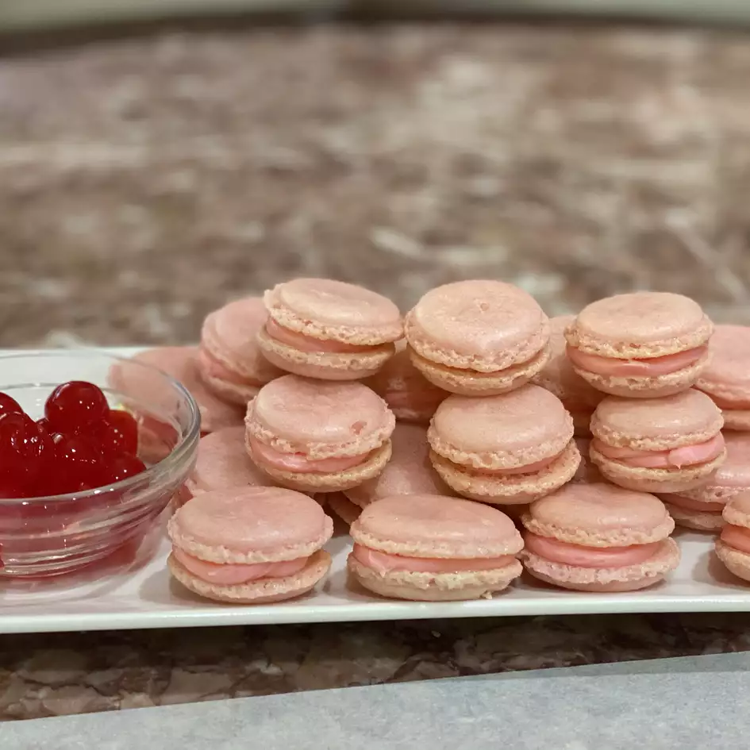

French Macaroons

Description:
This is a macaroon recipe.
Its pretty tasty.
Ingredients:
- 3 egg whites
- 6 tablespoons superfine (castor) sugar
- 1 cup finely ground almonds
- 1 ½ teaspoons finely ground almonds
- 1 ⅓ cups confectioners' sugar
Steps:
- Preheat oven to 320 degrees F (160 degrees C). Line baking sheets with parchment paper or a silicon mat.
- Whisk egg whites in a clean metal mixing bowl until thick, about 5 minutes; whisk the superfine sugar into the egg whites until thick, glossy, and the mixture holds stiff peaks, 5 to 8 more minutes.
- Separate the meringue into separate bowls to flavor and color, if desired. Spoon the meringue into a piping bag fitted with a 3/8-inch tip.
- Let the cookies stand at room temperature for about 15 minutes to form a thin skin.
- Bake in the preheated oven until tops are dry, about 15 minutes; let cool completely on the baking sheets before peeling off the parchment paper.